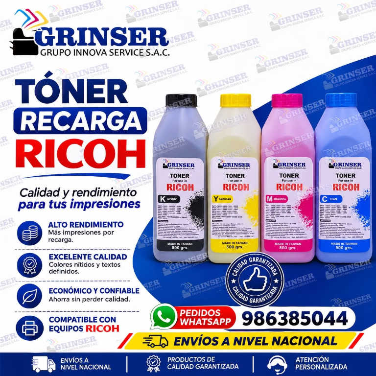

Tóner y tintas
Consumibles para mantener la calidad y continuidad de tus impresiones.
Consultar por WhatsAppTóner, tintas, repuestos y accesorios con orientación para encontrar la opción adecuada para tu equipo.
Consultar disponibilidad
Cuéntanos la marca y el modelo de tu equipo para orientarte sobre compatibilidad y disponibilidad.
Consumibles para mantener la calidad y continuidad de tus impresiones.
Consultar por WhatsAppOrientación para identificar piezas de acuerdo con la marca y el modelo.
Consultar por WhatsAppComplementos y accesorios para tus equipos y espacio de trabajo.
Consultar por WhatsApp